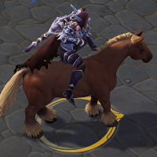
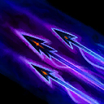
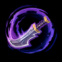
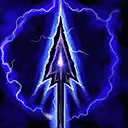
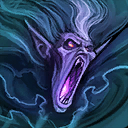
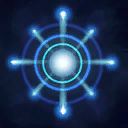

Sylvanas
Welcome to our Sylvanas guide for Heroes of the Storm. Here you will learn everything you need to know in order to play Sylvanas in a competitive environment, whether you play on your own or with a team.
Shadow Dagger Build
| Level 1 | Level 4 | Level 7 | Level 10 | Level 13 | Level 16 | Level 20 |
|---|---|---|---|---|---|---|
|  |  |  |  |  |
Shadow Dagger Icon Shadow Dagger Build is a balanced build that offers excellent area of effect damage, waveclear, and mobility. The core concept behind the build lies in improving Shadow Dagger through two specific Talents that turn it into an outstanding area of affect damage dealing Ability: Lost Soul Icon Lost Soul, which massively reduces its Cooldown, and Cold Embrace Icon Cold Embrace, which provides you with a reliable Armor reduction effect. The other Talents, which can be changed to respond to whatever best suits the situation at hand, seek to improve your ability to clear Mercenary Camps (Barbed Shot Icon Barbed Shot) and survive (Windrunner Icon Windrunner, Bolt of the Storm Icon Bolt of the Storm).
Go Back